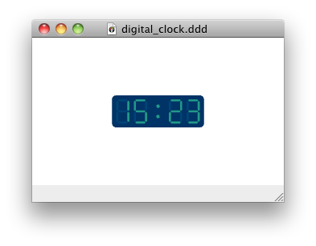

The DigitalClock module
Description
You can use the Digital Clock module in your presentation if you want
to display the time like a traditional alarm does.
Usage
To use the module, add the following import to your document:
import DigitalClock "0.1"
Example
The following Tao document will show a nice clock 40 pixels high:
import DigitalClock "0.1"
digital_clock 0, 0, 40
Here is a screen capture:
